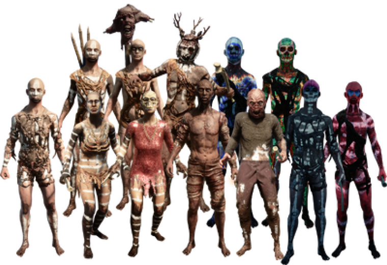

All about -enemies
First category
cannibals
.png)
Frank
The Frank Cannibal variant is recognizable by its dark, tanned skin and the torch it carries. Upon feeling threatened, Frank will douse himself with two bottles of Vodka before lighting himself ablaze. It will then attempt to directly attack the player by hand. Touching or getting hit by Frank while he is burning will cause the player to light ablaze. Although generally easy to deal with while on its own, the passive burning damage may hamper the player's longevity in a fight against a group of Cannibals, as Frank rarely appears alone.
.png)
Greg
The Greg variant carries an effigy on his back. Upon feeling threatened, he will plant his effigy on the ground, aggravating other cannibals and causing them to become more aggressive. Greg does not otherwise possess any peculiar moves or attacks, although destroying his effigy will provide the player with bones and possibly skulls.
.png)
Eddy
The Eddy variant carries three Crafted Spears on his back. When his target is at a distance, he will grab one of his spears and throw it at them. Eddy will attempt to predict the target's movement when throwing spears, requiring some agility to avoid getting hit. If Eddy is forced into close-quarter combat or runs out of spears, he will behave just like a normal cannibal. Although the damage inflicted by thrown spears remains fairly manageable, it is easy to get hit while distracted by other enemies.
.png)
Henry
Henry is a very aggressive variant that is recognizable by the skin mask it wears (not to confuse with the headpiece of the Creepy Armor). Henry is arguably the most dangerous variant to combat hand to hand, as he is significantly more agile and relentless than other cannibals, being capable of keeping constant pressure on the player as well as dodging and attacking simultaneously. He is most dangerous when he appears in a Cannibals group or when wearing higher tier Armor, making him more difficult to dismember. Ranged weapons will make fighting Henry significantly easier.
Your advertisement could be here
.png)
Igor
.png)